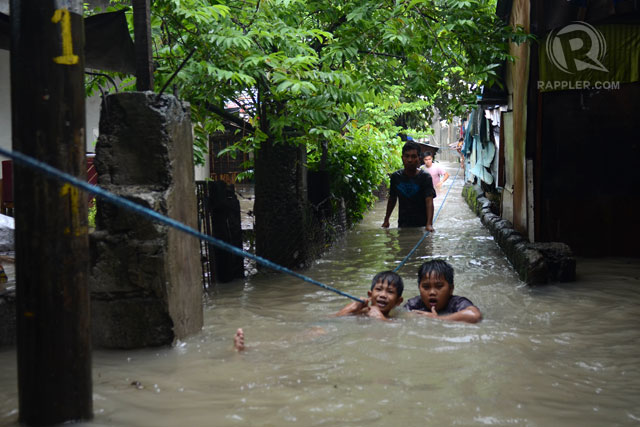
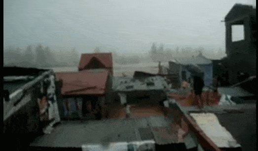
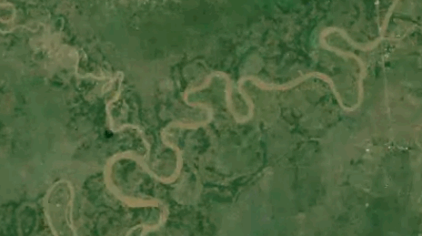

Changing Rivers
We always settle along the rivers and coasts. Rivers are rich and resources. It allows us to trade with others. Through the years we have altered much of our waterways.. This map shows the changes in our river systems in the past 50 years.
Pampanga River Delta
Pampanga river is the 2nd largest river in Luzon. It receives almost a third of all rainwater coming from the mountain slopes of the surrounding region.
This delta is the main outlet of the river. It is low lying and shallow.
 Ramon FVelasquez, CC-BY-SA 3.0
The curviness of rivers shows that water flows through bay very slow causing flooding for almost 2 weeks during the peak of monsoon season Lorem
Ramon FVelasquez, CC-BY-SA 3.0
The curviness of rivers shows that water flows through bay very slow causing flooding for almost 2 weeks during the peak of monsoon season Lorem
{kind=link}
Straight and fast moving waters
Long and almost straight rivers means rapid water movement. During the monsoon period of 2013, a month's worth of rain poured in Cavite within 24 hours. Rainwater coming from the ridge of Tagaytay flowed through the coastal towns of Cavite, inundating many homes. It less than a day, waters receded into the bay.  Rappler, 2013
Dangerous curves
Curvy rivers like this is dangerous for settlements. During heavy rains, water will take the shortest route and "jump off" any bariers.  RizalynMP, 2009 During Typhoon Ondoy (2009), residents living inside the bend were isolated because the only access was inundated by flood waters.
Ever Changing
Needsomeawesome summary, 
Story by Maning Sambale. Data from OpenStreetMap Contributors and NAMRIA.